PerfPlotter is a tool for performance analysis of Java Programs. It applies several heuristics to guide symbolic execution for exploring a subset of representative program paths. It can generate less complete but still meaningful performance distributions and expose the performance of interest such as best-/worst-case execution times with high coverage. A paper about this tool, titled "Generating Performance Distributions via Probabilistic Symbolic Execution", has been accepted to ICSE 2016. Please send bug reports, comments, or questions to Bihuan Chen.
PerfPlotter has been currently tested on Linux systems with:
PerfPlotter is implemented using the Symbolic PathFinder and its probabilistic symbolic execution extension:
The following software artifacts are used in the experiments we conducted to evaluate our proposed framework. All the experimental data can be download. Here we will further present some histograms that are not shown in our paper. Note that the rectangles in these histograms are almost invisible due to the low probability of paths.
This program performs the quick sort on an array of size n.
It contains n! feasible paths, and there is only one path that leads to the worst-case time complexity with n(n-1)/2 comparisons.
The performance of this program depends on the choice of pivot, and we selected the middle element as the pivot.
We analysed a version for n = 7 with 5,040 paths (the number is reported by our exhaustive symbolic execution engine).
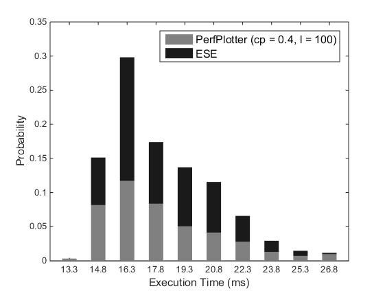 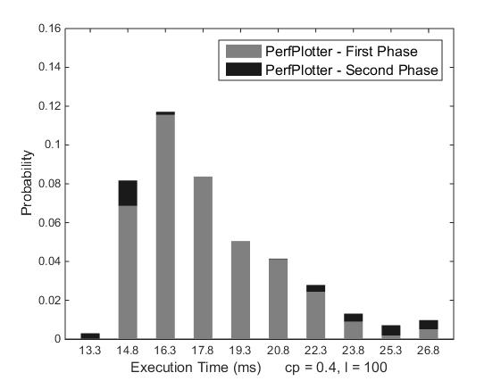
We also analysed a version of Quick Sort for n = 8. The exhaustive symbolic execution approach ran out of memory, while PerfPlotter produced a meaningful distribution.
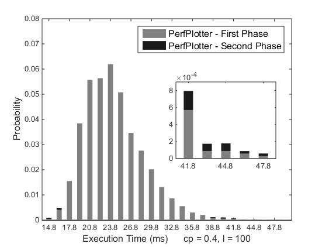
This program contains two single loops executed in sequence.
The iterations of each loop depend on an input variable.We limited the two input variables to [1, 100].
This program contains a total of 10,000 paths.
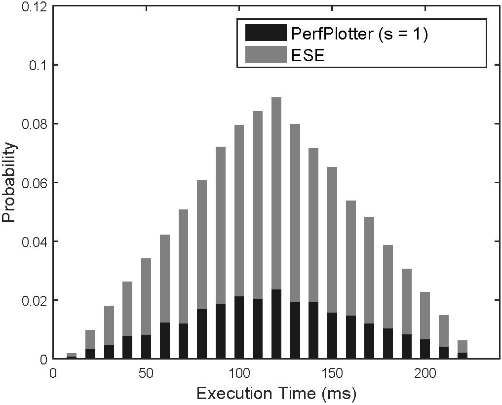 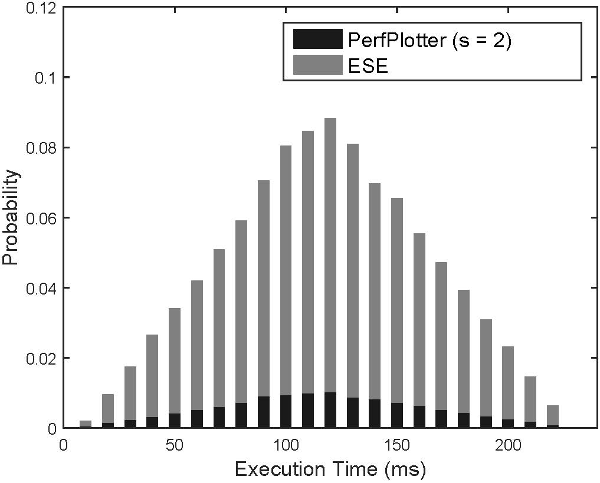
This program contains a nested loop.
The iterations of both the inner loop and outer loops depend on the input variables.
We limited the two input variables to [1, 30], which leads to a total of 900 paths.
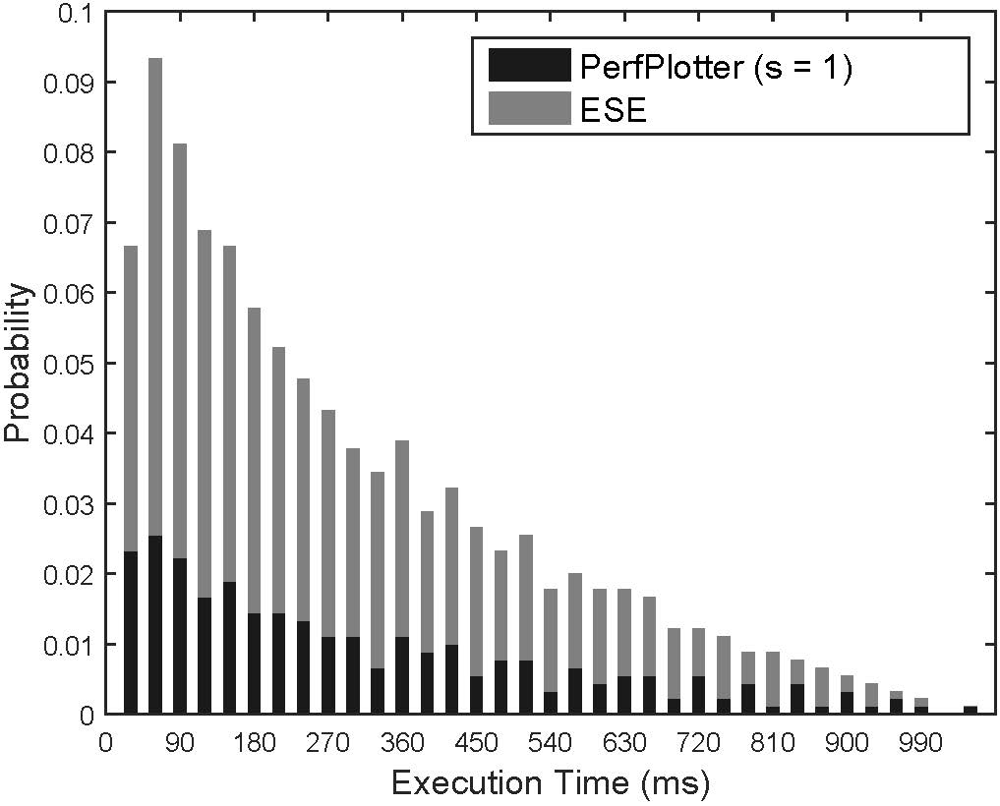 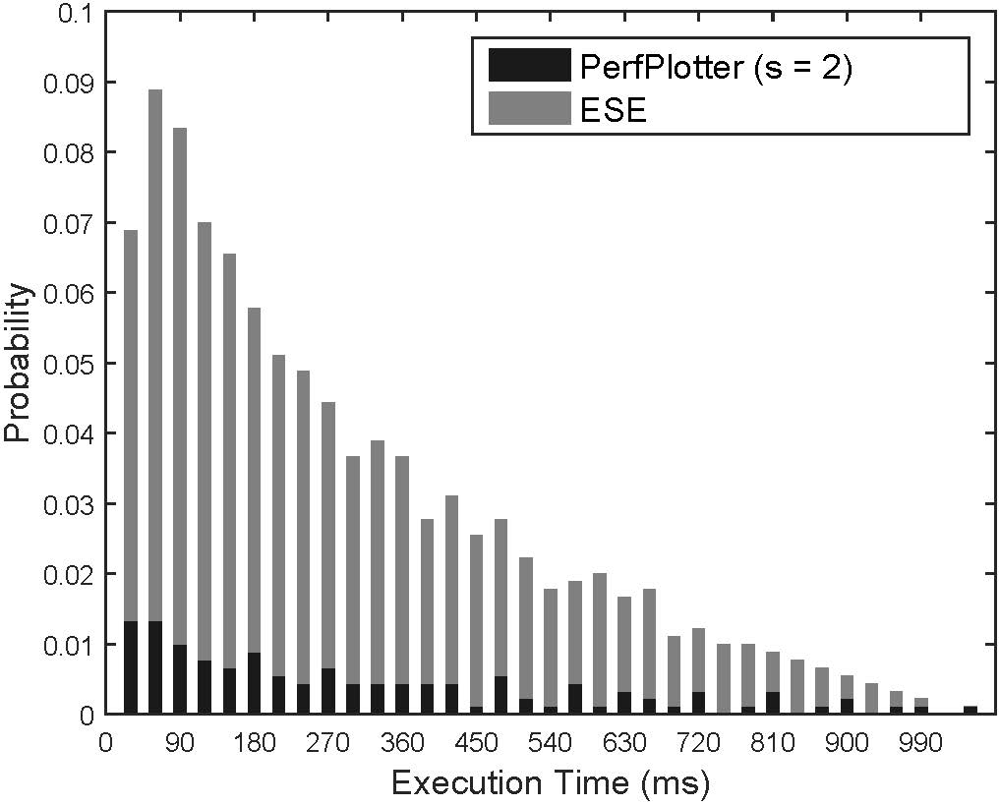
This program is the red-black tree implementation in the Java library.
We analysed the performance of a sequence of 5 calls to put and remove methods.
The program has 0.6K lines of code with 3,840 paths.
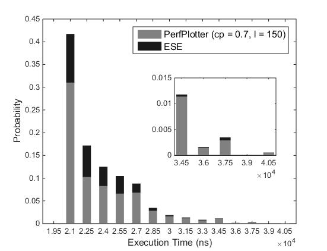 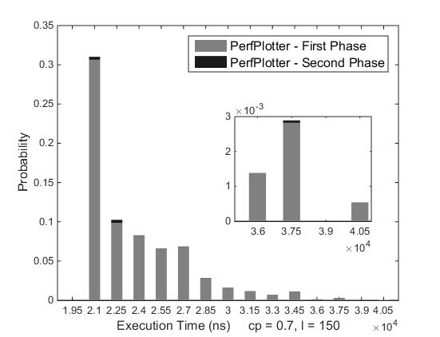
Apollo Lunar Autopilot is a Java program automatically translated from a Simulink model.
The model is available from MathWorks.
The program decides the transition between fire and coast states and computes which reaction jets to fire.
It makes use of complex math functions such as Math.sqrt.
The program contains 2.6K lines of Java code with 54 classes and 2,100 paths.
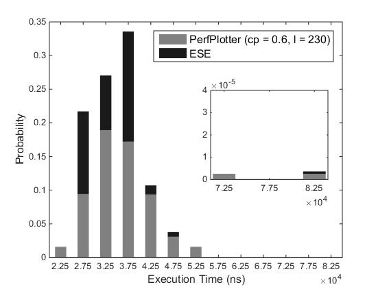 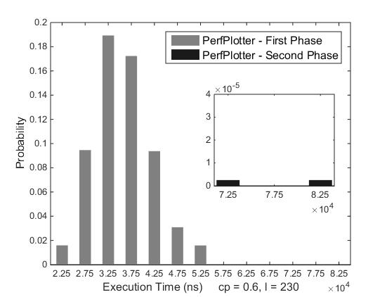
The CDx system is a simulator for aircraft collision detection.
The Detector module detects collisions according to the current and next positions of the aircrafts, which has 3.2K lines of code.
We analysed this module for 10 aircrafts, which leads to a total of 2,476 paths.
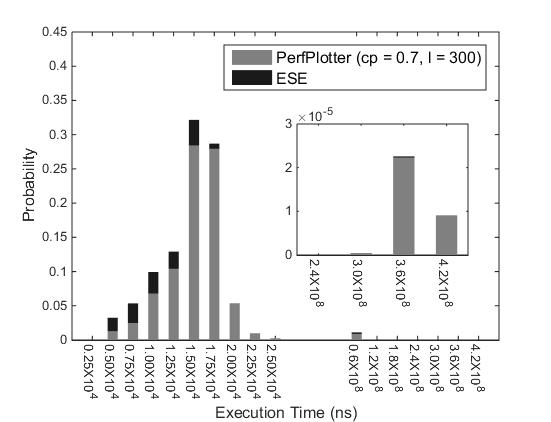 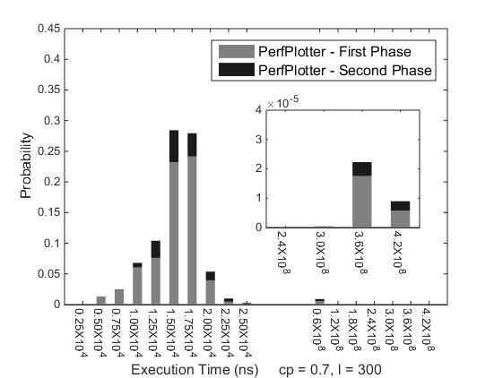
Tactical Separation Assisted Flight Environment is designed by NASA and FAA to predict flight conflicts and alert air traffic controllers.
We analsed the Conformance Monitor module, which checks if a flight is conforming to the planned route and assigns or synthesizes a trajectory.
This module has 4.0K lines of code with 1,289 paths.
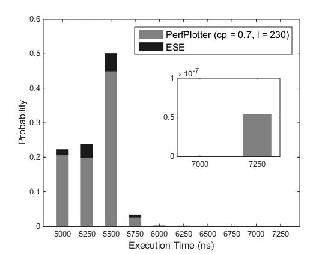 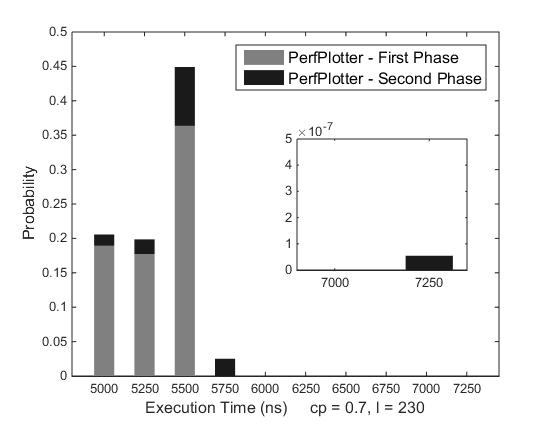